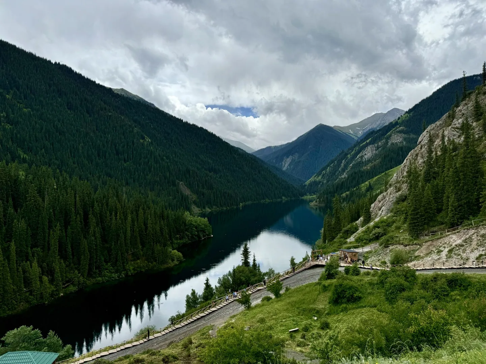

ЭЛЕКТРОНДЫҚ ПОРТФОЛИО / 2026
Сәлем,
мен Жантаспын.
Тұрсын Жантас Думанұлы.
Абай атындағы ҚазҰПУ-дың 2-курс студентімін. Бұл жерде оқу жолым, тәжірибем және жұмыстарым жинақталған.

Білімді тәжірибемен
байланыстырғым келеді.
Менің атым — Тұрсын Жантас Думанұлы. Абай атындағы Қазақ ұлттық педагогикалық университетінде екінші курста оқимын.
Оқу барысында алған білімді өмірмен байланыстыруға қызығамын. Көлсайдағы далалық практика табиғатты жақыннан танып, оқу тәжірибем туралы ойлануға мүмкіндік берді. Осы портфолио арқылы жасаған жұмыстарымды жүйелеп, үйренгенімді бөлісемін.
- Оқу орны
- Абай атындағы ҚазҰПУ
- Оқу кезеңі
- Бакалавриат, 2-курс
- Практика
- Көлсай, далалық тәжірибе
КӨЛСАЙ
Табиғат аясындағы
оқу тәжірибесі.
Көлсайдағы далалық практика — менің студенттік өмірімдегі есте қалған тәжірибелердің бірі.
Табиғи ортада болу оқу материалдарына жаңаша қарауға мүмкіндік берді. Бұл тәжірибе табиғатқа ұқыпты қараудың және өз әсеріңді саналы түрде қорытындылаудың маңызын көрсетті.
Табиғи ортаға зейін қою.
Оқуды тәжірибемен байланыстыру.
Тәжірибені портфолиода көрсету.
03 ОҚУ ЖҰМЫСТАРЫ
Үйренгенім.
Жасағаным.
Ақпараттық-коммуникациялық
технологиялар пәні бойынша жұмыстар.
ПРЕЗЕНТАЦИЯ ЖӘНЕ ВЕБ-САЙТ
HTML, CSS және GitHub
Бұл құралдар не үшін керек? Жеке портфолио мысалындағы түсіндірме және код үлгілері.
СӨЖ / ЭССЕ
ЖИ этикалық нормалары
Жасанды интеллектіні білім беруде адал және жауапкершілікпен қолдану туралы эссе.
04 САЙТ ҚАЛАЙ ЖАСАЛДЫ
HTML
Беттің мазмұны мен құрылымы. Тақырыптар, мәтіндер және файл сілтемелері.
CSS
Түстер, қаріптер, бет орналасуы және телефонға бейімделген көрініс.
GitHub
Жоба кодының репозиторийі. GitHub Pages сайтты интернетте жариялайды.